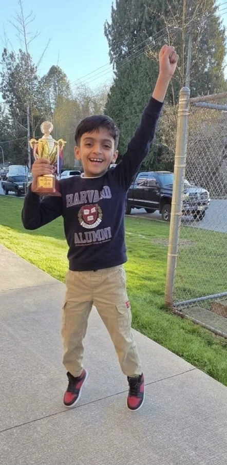

Student Progress & Achievements
Real improvement. Real results. Our students' journeys speak for themselves.
Online Rating Improvement

Amruth — celebrating a tournament victory. From beginner to trophy winner through structured training at School of Chess.
.webp)
Prize distribution at a FIDE Rated Tournament — students consistently placing in the top ranks.
.webp)
12th BSCF — 700+ player FIDE Rated Tournament 2026. School of Chess student on the podium.
FIDE Rating Progress

Vidur — consistent upward trajectory from 1000 to near 2000 FIDE across all time controls (2022–2026).
Vidur progressed from unrated to near 2000 FIDE — Standard, Rapid and Blitz — through systematic training at School of Chess.
Tournament Achievements
.webp)
OMR Chess Club — student winning the Under-10 category, receiving trophy and certificate at a TNCA rated tournament.
.webp)
Students at the Dubai Schools Games Chess Tournament — receiving certificates and medals at an international level event.
.webp)
Allegiance to Zayed Rapid Chess Tournament, Dubai Sports Council — prize distribution ceremony.